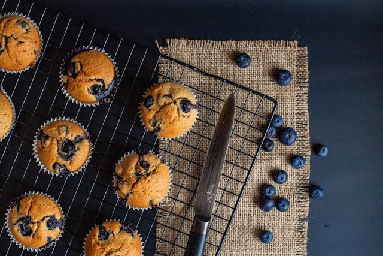

Blueberry Muffins
These blueberry muffins are soft, fluffy, and bursting with fresh blueberries.
Ingredients
- 1.5 cups all-purpose flour
- 3/4 cup sugar
- 1/2 tsp salt
- 2 tsp baking powder
- 1/3 cup vegetable oil
- 1 egg
- 1/3 cup milk
- 1 cup fresh blueberries
Instructions
- Preheat oven to 400°F (200°C). Line muffin tin with papers.
- Mix flour, sugar, salt, and baking powder.
- In another bowl, mix oil, egg, and milk.
- Combine wet and dry ingredients. Fold in blueberries.
- Fill muffin cups and bake for 20-25 minutes.
- Let cool and enjoy!
Back to Recipes